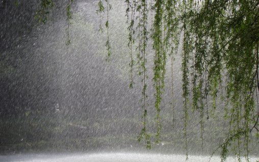

Ploaia este o formă de precipitație atmosferică sub formă de picături de apă provenite din condensarea vaporilor din atmosferă. Ploaia se formează când diferite picături de apă din nori cad pe suprafața Pământului în formă lichidă. Nu toată ploaia ajunge în sol. Unele picături de apă se evaporă în timpul căderii și nu mai ajung în pământ. Acest fenomen este mai ales întâlnit în zonele deșertice și numit virga.
Ploaia este o parte importantă a circuitului apei în natură și are loc după ce apa care s-a evaporat din râuri, lacuri, oceane, ș.a.m.d. se condensează ajungând picături de apă și cade pe pământ, întorcându-se înapoi în pârâuri, râuri, lacuri. Procesul formării ploii este numit și efectul Bergeron
Pluviozitatea (din franceză: pluviosité) reprezintă media cantității de ploaie căzută pe un anumit loc într-un interval de timp determinat.
Popular, ploaia mai este denumită bură dacă picăturile sunt fine și multe și este descrisă ca fiind torențială atunci când picăturile de apă sunt mari, multe și cad cu repeziciune.
Ploaie foarte fină, când rata precipitațiilor este sub 0,25 mm / oră
Ploaie fină, când rata precipitațiilor este între 0,25 și 1 mm / oră
Ploaie moderată, când rata precipitațiilor este între 1 și 4 mm / oră
Ploaie deasă, când rata precipitațiilor este între 4 și 16 mm / oră
Ploaie foarte deasă, când rata precipitațiilor este între 16 și 50 mm / oră
Ploaie torențială, când rata precipitațiilor este mai mare de 50 mm / oră
ploaie orografică
ploaie convectivă
ploaie ciclonică
ploaie artificială
Omul influențează permanent fenomenele meteorologice, inclusiv ploaia. Ploaia poate fi indusă ca urmare a reacțiilor chimice produse de gazele din atmosferă și gazele poluante produse în timpul activităților umane, uneori cu efecte dramatice. Pentru că activitatea poluantă este mult mai mare în timpul sfârșitului de săptămână decât în timpul zilelor lucrătoare, în zona coastelor estice ale Americii sunt cu 22% mai multe șanse de ploaie în timpul zilelor de sâmbătă decât în timpul zilelor de luni.